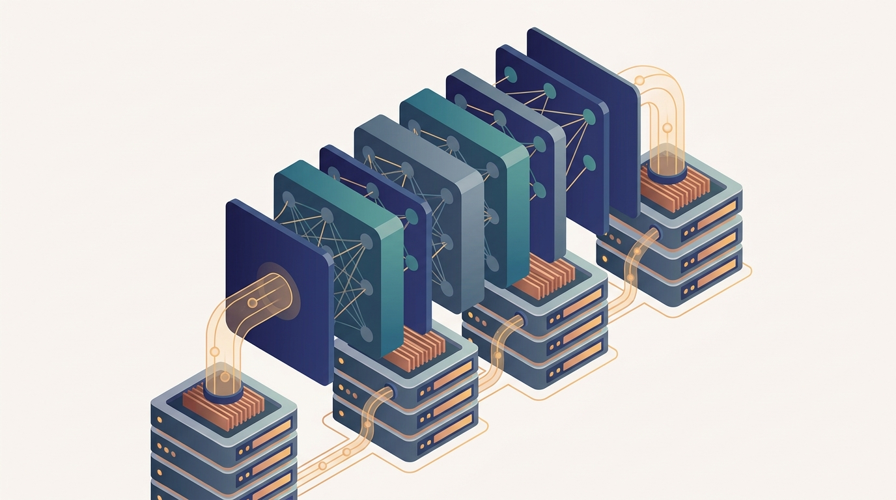

"I hold one third of a single attention layer. My neighbor holds the next third. We have never seen a whole token in our lives, and yet, all-gather by all-gather, we somehow speak."
A Shard That Believes It Is the Whole Model
When a model is too large to fit on one device, you stop replicating it and start partitioning it: tensor parallelism splits each layer across devices and stitches the pieces back with all-gather and reduce-scatter, pipeline parallelism assigns consecutive layers to different devices and streams micro-batches through them to keep every stage busy, and sharded data parallelism keeps the data-parallel structure of Chapter 15 but partitions the redundant parameters, gradients, and optimizer state so no device holds a full copy. The pressure that drives the whole chapter is memory, not speed. A model with $N$ parameters trained with the Adam optimizer in mixed precision needs roughly $16N$ bytes for parameters, gradients, and optimizer state combined, plus activations that grow with batch and sequence length, so a model that would comfortably fit its forward pass on one accelerator still cannot be trained there. The three parallelism axes are three different cuts through that memory wall. Tensor parallelism cuts a matrix multiply across the feature dimension and pays for it with a collective inside every layer, so it is bandwidth-hungry and confined to a fast interconnect. Pipeline parallelism cuts the network into depth-ordered stages and pays for it with a startup bubble that micro-batching and clever schedules shrink. Sharded data parallelism, the ZeRO family and PyTorch FSDP, cuts the redundant state that plain data parallelism copied onto every replica, re-materializing each parameter shard with an all-gather just before it is needed and freeing it just after, trading extra communication for a near-linear reduction in per-device memory. The chapter grounds these in the production stacks that ship them, DeepSpeed and Megatron-LM, extends them to the long sequences that strain activation memory with sequence and context parallelism, adds activation checkpointing as the per-node enabler that trades recomputation for memory, and closes by composing all of the axes into 3D and 4D parallelism and reasoning about how to choose and tune the combination for a given model and cluster.
Chapter Overview
This is the second chapter of Part IV, and it picks up exactly where the data-parallel baseline of Chapter 15 ran out of room. There the model fit on every device and the engineering was about hiding the gradient all-reduce; here the model does not fit at all, and the engineering is about cutting it into pieces that do. The binding constraint shifts from communication time to device memory, and the collectives you met in Part I return in a new role: not synchronizing replicas of a whole model, but assembling and disassembling the shards of a single one. The thread to watch is that all-reduce decomposes. The reduce-scatter and all-gather that Chapter 4 introduced as the two halves of a ring all-reduce now appear separately, each carrying its own piece of the sharded computation.
The ten sections fall into four groups. The first names the problem and the first two cuts: Section 16.1 works out the memory budget that forces partitioning, Section 16.2 develops tensor parallelism that splits a layer across devices, and Section 16.3 develops pipeline parallelism that splits the network into depth-ordered stages. The second group develops the sharded data-parallel family that dominates practice: Section 16.4 builds the three ZeRO stages that progressively partition optimizer state, gradients, and parameters, and Section 16.5 grounds them in PyTorch FSDP. The third group makes it production-grade: Section 16.6 surveys DeepSpeed and Megatron-LM, Section 16.7 extends the cuts to long sequences with sequence and context parallelism, and Section 16.8 adds activation checkpointing as the per-node enabler that buys memory back with recomputation. The fourth group composes everything: Section 16.9 builds 3D and 4D parallelism by stacking the axes, and Section 16.10 reasons about how to choose and tune the combination for a given model, cluster, and budget.
Read in order, the ten sections take you from "the model does not fit on one device" to "a cluster trains a model far larger than any single accelerator could hold, with each parallelism axis mapped onto the interconnect tier that suits it." The argument is cumulative: tensor and pipeline parallelism each solve part of the memory problem with different communication costs, sharded data parallelism solves it with a third, and the frontier strategies are not a choice among them but a layered composition of all of them, tuned so that the most communication-heavy axis sits on the fastest links.
Prerequisites
This chapter builds directly on the two pillars established earlier in the book. From Chapter 15: Data-Parallel Deep Learning you carry the replicate-split-average pattern, the gradient all-reduce, and the bucketing-and-overlap craft, because sharded data parallelism in Sections 16.4 and 16.5 is data parallelism with the redundant state removed, and you cannot appreciate what ZeRO partitions without first knowing what plain data parallelism copies. From Chapter 4: Communication Primitives for Distributed Training you carry the collectives that this entire chapter runs on, and especially the all-gather and reduce-scatter that the sharded methods use to re-materialize and re-partition parameters on every step, since the all-reduce you learned there now appears decomposed into those two halves. The chapter assumes comfortable Python and PyTorch, a working understanding of mini-batch SGD and of the forward and backward passes through a transformer, and a basic picture of GPU memory: where parameters, gradients, optimizer state, and activations each live and how large each becomes. No prior experience with model partitioning is required; Section 16.1 builds the memory budget from first principles before any cut is made.
Learning Objectives
- Compute the per-device memory budget of training a large model, accounting for parameters, gradients, optimizer state, and activations, and explain why a model can fit its forward pass yet still be untrainable on one accelerator.
- Derive tensor parallelism as a partitioned matrix multiply, and identify the all-gather and all-reduce that stitch the sharded layer back together and why they confine it to a fast interconnect.
- Explain pipeline parallelism as depth-ordered stages fed by micro-batches, characterize the pipeline bubble, and compare the GPipe, 1F1B, and interleaved schedules that shrink it.
- Describe the three ZeRO stages and show how each progressively partitions optimizer state, gradients, and then parameters to cut per-device memory toward a near-linear reduction.
- Configure PyTorch FSDP, including sharding strategy, wrapping policy, and the all-gather and reduce-scatter that re-materialize and re-partition parameters around each layer.
- Place DeepSpeed and Megatron-LM within the ecosystem, naming which parallelism axes each pioneered and what their configuration exposes.
- Explain sequence and context parallelism and how they partition the activation and attention memory that long contexts make dominant.
- Reason about activation checkpointing as a per-node enabler, trading recomputation in the backward pass for a reduction in stored activation memory.
- Compose data, tensor, pipeline, and expert parallelism into 3D and 4D strategies, and map each axis onto the interconnect tier whose bandwidth its collectives demand.
- Choose and tune a parallelism strategy for a given model size, cluster topology, and memory budget, reasoning about the tradeoffs that make one combination better than another.
If you keep one thing from this chapter, keep this: when a model is too large for one device you partition it three ways, splitting layers across devices (tensor), splitting the network into depth-ordered stages (pipeline), and splitting the redundant optimizer state, gradients, and parameters that plain data parallelism copied (sharded), then compose all three so the most communication-heavy axis lands on the fastest interconnect. Read forward, the sections build the craft in layers: first the memory budget that forces the split, then tensor and pipeline parallelism, then the ZeRO and FSDP sharding that removes data-parallel redundancy, then DeepSpeed and Megatron-LM that ship it, sequence and context parallelism for long inputs, activation checkpointing as the per-node enabler, and finally 3D and 4D parallelism and how to tune the combination. Read as a question, the chapter asks of any model whose parameters, gradients, and optimizer state overflow a single accelerator: how do you cut it into pieces that fit, and how do you arrange those cuts so the collectives that glue them back together do not erase the speedup. The roadmap below walks the ten sections that answer it.
Chapter Roadmap
- 16.1 When the Model No Longer Fits on One Device Works out the training memory budget of parameters, gradients, optimizer state, and activations, and shows why a model that fits its forward pass on one accelerator can still be impossible to train there.
- 16.2 Tensor Parallelism Develops the partitioned matrix multiply that splits each layer across devices along its feature dimension, and the all-gather and all-reduce that reassemble it, explaining why this axis demands a fast intra-node interconnect.
- 16.3 Pipeline Parallelism Assigns consecutive layers to different devices as depth-ordered stages and streams micro-batches through them, characterizing the pipeline bubble and the GPipe, 1F1B, and interleaved schedules that shrink it.
- 16.4 Sharded Data Parallelism: ZeRO Stages 1-3 Builds the three ZeRO stages that progressively partition optimizer state, then gradients, then parameters across the data-parallel replicas, cutting per-device memory toward a near-linear reduction.
- 16.5 PyTorch FSDP Develops ZeRO stages 1-3 and FSDP from first principles, then introduces FSDP2 per-parameter DTensor sharding and the TorchTitan 4D parallelism stack that composes DP, CP, TP, and PP using a single unified primitive.
- 16.6 DeepSpeed and Megatron-LM Surveys the two production stacks that pioneered ZeRO and tensor-plus-pipeline parallelism, naming which axes each contributes and what their configuration exposes to the practitioner.
- 16.7 Sequence and Context Parallelism Extends the cuts to long inputs by partitioning the activation and attention memory along the sequence dimension, the axis that dominates as context windows grow.
- 16.8 Activation Checkpointing as a Per-Node Enabler Derives the activation memory budget formula, builds cost models for full activations, selective checkpointing, full checkpointing, and CPU offload, and determines the roofline crossover where each strategy wins.
- 16.9 3D and 4D Parallelism Composes data, tensor, pipeline, and expert parallelism into layered strategies, mapping each axis onto the interconnect tier whose bandwidth its collectives demand.
- 16.10 Choosing and Tuning a Parallelism Strategy Reasons about how to select and size the combination of axes for a given model, cluster topology, and memory budget, weighing the tradeoffs that make one strategy outperform another.
Read the ten sections in order and you will hold a working blueprint for training a model far larger than any single accelerator can hold: Section 16.1 establishes the memory wall, Sections 16.2 and 16.3 cut the model across the width of a layer and the depth of the network, Sections 16.4 and 16.5 remove the data-parallel redundancy with ZeRO and FSDP, and Sections 16.6 through 16.10 ground it in DeepSpeed and Megatron-LM, extend it to long contexts, add activation checkpointing, and compose the axes into the 3D and 4D strategies you then learn to tune. The thread to watch is the all-reduce of Chapter 4 coming apart into the all-gather and reduce-scatter that assemble and disassemble shards, and the full model replica of Chapter 15 fracturing into pieces no one device could hold alone.
What's Next?
This chapter partitions a dense model: every parameter participates in every forward pass, and the cuts are about fitting that dense computation across devices. The next chapter changes the model itself. Chapter 17: Expert Parallelism and Sparse Distributed Models takes up mixture-of-experts architectures, where each token is routed to only a small subset of many expert sub-networks, so the parameter count can grow enormously while the per-token compute stays fixed. That sparsity introduces a new parallelism axis, expert parallelism, which places different experts on different devices and uses an all-to-all to route tokens to the device that holds the expert they were assigned. The all-to-all is the fourth dimension of the 4D parallelism this chapter introduced, and the routing it serves is a distributed scheduling problem on top of the partitioning you just learned. Read it next, and watch the dense model of this chapter give way to a sparse one whose effective size is decoupled from the compute it spends on any single token.
Bibliography & Further Reading
Tensor and Pipeline Parallelism
Shoeybi, M., Patwary, M., Puri, R., LeGresley, P., Casper, J., Catanzaro, B. "Megatron-LM: Training Multi-Billion Parameter Language Models Using Model Parallelism." arXiv:1909.08053, 2019. arxiv.org/abs/1909.08053
The paper that introduced the row-and-column tensor parallelism for transformer layers used throughout Section 16.2, splitting attention and MLP matrices across devices with minimal collectives.
Huang, Y., Cheng, Y., Bapna, A., Firat, O., Chen, M., Chen, D., Lee, H., Ngiam, J., Le, Q., Wu, Y., Chen, Z. "GPipe: Efficient Training of Giant Neural Networks Using Pipeline Parallelism." arXiv:1811.06965, 2018. arxiv.org/abs/1811.06965
The work that introduced micro-batch pipeline parallelism and the bubble it must overcome, the starting point for the schedules compared in Section 16.3.
Narayanan, D., Harlap, A., Phanishayee, A., Seshadri, V., Devanur, N. R., Ganger, G. R., Gibbons, P. B., Zaharia, M. "PipeDream: Generalized Pipeline Parallelism for DNN Training." SOSP 2019. arxiv.org/abs/1806.03377
The system that introduced the 1F1B (one-forward-one-backward) schedule and asynchronous pipelining, the efficiency refinement of pipeline parallelism developed in Section 16.3.
Narayanan, D., Shoeybi, M., Casper, J., LeGresley, P., Patwary, M., Korthikanti, V., et al. "Efficient Large-Scale Language Model Training on GPU Clusters Using Megatron-LM." arXiv:2104.04473, 2021. arxiv.org/abs/2104.04473
The paper that composed tensor, pipeline, and data parallelism into the interleaved 3D scheme, the direct basis for the 3D parallelism of Section 16.9.
Sharded Data Parallelism
Rajbhandari, S., Rasley, J., Ruwase, O., He, Y. "ZeRO: Memory Optimizations Toward Training Trillion Parameter Models." arXiv:1910.02054, 2019. arxiv.org/abs/1910.02054
The paper that introduced the three ZeRO stages partitioning optimizer state, gradients, and parameters, the technical core of Section 16.4.
Zhao, Y., Gu, A., Varma, R., Luo, L., Huang, C.-C., Xu, M., et al. "PyTorch FSDP: Experiences on Scaling Fully Sharded Data Parallel." arXiv:2304.11277, 2023. arxiv.org/abs/2304.11277
The system paper behind PyTorch Fully Sharded Data Parallel, detailing the all-gather and reduce-scatter that wrap each layer, the direct reference for Section 16.5.
Ren, J., Rajbhandari, S., Aminabadi, R. Y., Ruwase, O., Yang, S., Zhang, M., Li, D., He, Y. "ZeRO-Offload: Democratizing Billion-Scale Model Training." arXiv:2101.06840, 2021. arxiv.org/abs/2101.06840
The extension that offloads optimizer state and computation to CPU memory, one way the memory budget of Section 16.1 is met when device memory alone is not enough.
Rajbhandari, S., Ruwase, O., Rasley, J., Smith, S., He, Y. "ZeRO-Infinity: Breaking the GPU Memory Wall for Extreme Scale Deep Learning." arXiv:2104.07857, 2021. arxiv.org/abs/2104.07857
The work that adds NVMe and CPU offload to ZeRO for training models far larger than aggregate GPU memory, the frontier of the sharded methods in Section 16.4.
Frameworks and Long-Context Parallelism
Rasley, J., Rajbhandari, S., Ruwase, O., He, Y. "DeepSpeed: System Optimizations Enable Training Deep Learning Models with Over 100 Billion Parameters." KDD 2020. deepspeed.ai
The library that packaged ZeRO and pipeline parallelism into a production training stack, the basis of the DeepSpeed survey in Section 16.6.
Liu, H., Zaharia, M., Abbeel, P. "Ring Attention with Blockwise Transformers for Near-Infinite Context." arXiv:2310.01889, 2023. arxiv.org/abs/2310.01889
The method that distributes attention over the sequence dimension with a ring of devices exchanging key-value blocks, the technical heart of the context parallelism in Section 16.7.
Activation Memory and Automated Parallelism
Chen, T., Xu, B., Zhang, C., Guestrin, C. "Training Deep Nets with Sublinear Memory Cost." arXiv:1604.06174, 2016. arxiv.org/abs/1604.06174
The paper that introduced activation checkpointing, recomputing activations in the backward pass to cut memory to sublinear in depth, the per-node enabler of Section 16.8.
Zheng, L., Li, Z., Zhang, H., Zhuang, Y., Chen, Z., Huang, Y., et al. "Alpa: Automating Inter- and Intra-Operator Parallelism for Distributed Deep Learning." arXiv:2201.12023, 2022. arxiv.org/abs/2201.12023
The compiler that searches the space of data, tensor, and pipeline parallelism automatically, the research frontier behind the strategy-tuning discussion of Section 16.10.